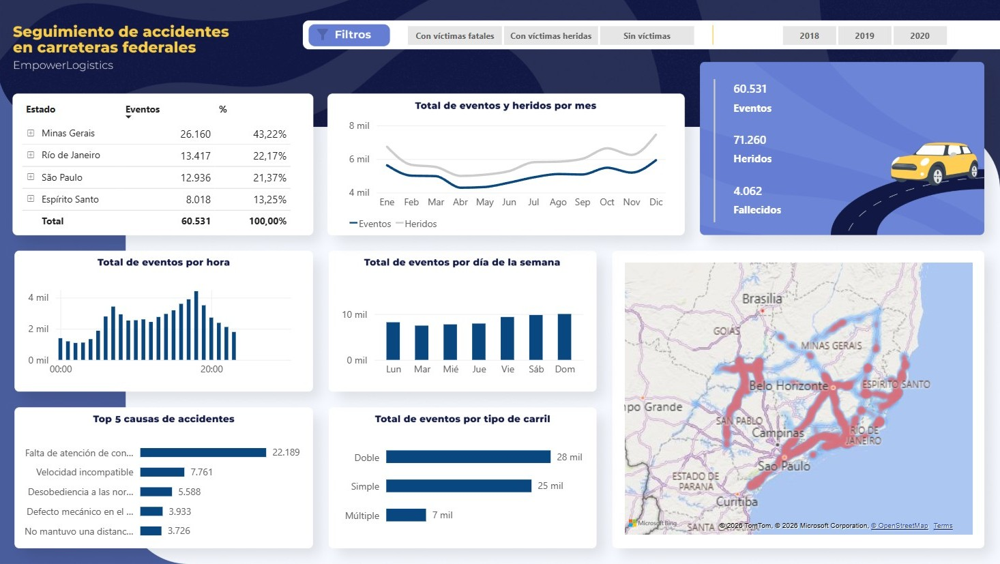

Accidentes en Carreteras
Solución end-to-end: ETL Medallion en Python, modelo estrella y dashboard en Power BI.
Bogotá, Colombia
Business Intelligence Developer
Construyo soluciones de Business Intelligence de punta a punta, desde procesos ETL y modelos de datos robustos hasta dashboards en Power BI, con foco en rendimiento, calidad y gobierno del dato.
—— PROYECTOS
Proyectos personales enfocados en Business Intelligence, modelado de datos, procesos de ETL y automatización.

Solución end-to-end: ETL Medallion en Python, modelo estrella y dashboard en Power BI.
—— HABILIDADES
Herramientas y tecnologías que utilizo para crear soluciones de BI eficientes y escalables.
Dashboards · DAX · RLS · Report Builder · Power Query
Joins · CTEs · Agregaciones · Window Functions
SQL Server · PostgreSQL · SharePoint · APIs
Dimensional · Semántico · Star & Snowflake Schema
Limpieza · Transformación · Integración · Multicapa · Medallion · SSIS
Workspaces · Aplicaciones · Roles · Gobierno de datos
Pandas · NumPy · Jupyter · Automatización
Flujos · Automatización · Integración · Procesos
Power Query · Power Pivot · Tablas dinámicas
Diseño de dashboards · Prototipado · UI/UX
Scrum · Documentación · Control de versiones
—— EXPERIENCIA
Un recorrido por mi experiencia trabajando con datos y los principales logros de mi trayectoria profesional.
2024 — 2026
SOMOS GENTE DIGITAL
Bogotá · Remoto
2023 — 2024
NEORIS
Bogotá · Remoto
2021 — 2023
GM ROBOTIC
Ciudad de México · Remoto
2019 — 2020
RAXIONE
Ciudad de México · Remoto
2017 — 2019
GM ROBOTIC
Ciudad de México · Remoto
—— Sobre mí
Soy desarrolladora de Business Intelligence con enfoque en ingeniería de datos. Disfruto construir dashboards desde la base: el modelo, la calidad del dato, el rendimiento y la visualización final que hace que las personas confíen en lo que ven.
He trabajado en sectores como Talento Humano, Retail y Educación, y eso me enseñó que un buen modelo empieza por entender cómo opera el negocio, no por la herramienta. Cuando el modelo está bien hecho, todo lo demás fluye.
Fuera del trabajo cuido mis bonsáis, hago senderismo, me capacito en nail art y, cada vez que puedo, visito el mar — mi lugar favorito en el mundo.
¿Hablamos?